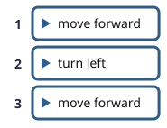
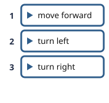
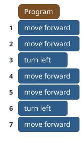
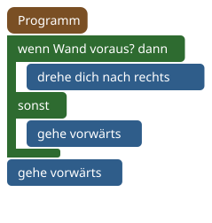
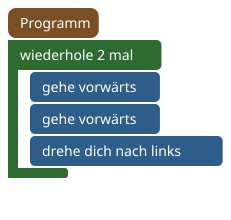
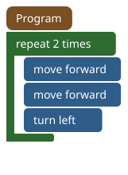
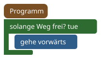
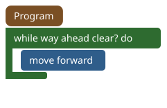

Medienübersicht
Alle Bilder, Audios und Videos dieser App mit ihrer Quelle und ihrer Lizenz.
Bilder

images/schulhaus-plan.svg© CC-BY-4.0Verwendet auf: Was ist ein Algorithmus?

images/kiko-eigenschaften-toms-karten-de.svg© CC-BY-4.0Verwendet auf: Eigenschaften von Algorithmen

images/kiko-eigenschaften-toms-karten-en.svg© CC-BY-4.0Verwendet auf: Eigenschaften von Algorithmen

images/kiko-sequenz-einstieg.svg© CC-BY-4.0Verwendet auf: Sequenz

images/kiko-sequenz-einstieg-karten-de.svg© CC-BY-4.0Verwendet auf: Sequenz

images/kiko-sequenz-einstieg-karten-en.svg© CC-BY-4.0Verwendet auf: Sequenz

images/kiko-sequenz-drei-befehle-de.svg© CC-BY-4.0Verwendet auf: Sequenz

images/kiko-sequenz-drei-befehle-en.svg© CC-BY-4.0Verwendet auf: Sequenz

images/kiko-challenge-sequenz-schulhof.svg© CC-BY-4.0Verwendet auf: Sequenz

images/kiko-sequenz-zaehlen.svg© CC-BY-4.0Verwendet auf: Sequenz

images/kiko-sequenz-auswahl.svg© CC-BY-4.0Verwendet auf: Sequenz

images/kiko-bloecke-wo.svg© CC-BY-4.0Verwendet auf: Programmieren mit Blöcken

images/kiko-bloecke-wo-programm-de.svg© CC-BY-4.0Verwendet auf: Programmieren mit Blöcken

images/kiko-bloecke-wo-programm-en.svg© CC-BY-4.0Verwendet auf: Programmieren mit Blöcken

images/kiko-bloecke-karten-als-bloecke-de.svg© CC-BY-4.0Verwendet auf: Programmieren mit Blöcken

images/kiko-bloecke-karten-als-bloecke-en.svg© CC-BY-4.0Verwendet auf: Programmieren mit Blöcken

images/kiko-challenge-fehler-finden.svg© CC-BY-4.0Verwendet auf: Programmieren mit Blöcken

images/kiko-bloecke-fehler.svg© CC-BY-4.0Verwendet auf: Programmieren mit Blöcken

images/kiko-bloecke-fehler-programm-de.svg© CC-BY-4.0Verwendet auf: Programmieren mit Blöcken

images/kiko-bloecke-fehler-programm-en.svg© CC-BY-4.0Verwendet auf: Programmieren mit Blöcken

images/kiko-verzweigung-programm-de.svg© CC-BY-4.0Verwendet auf: Verzweigung

images/kiko-verzweigung-programm-en.svg© CC-BY-4.0Verwendet auf: Verzweigung

images/kiko-verzweigung-b.svg© CC-BY-4.0Verwendet auf: Verzweigung

images/kiko-verzweigung-a.svg© CC-BY-4.0Verwendet auf: Verzweigung

images/kiko-challenge-wenn-sonst-1.svg© CC-BY-4.0Verwendet auf: Verzweigung

images/kiko-challenge-wenn-sonst-2.svg© CC-BY-4.0Verwendet auf: Verzweigung

images/kiko-zaehlschleife-programm-de.svg© CC-BY-4.0Verwendet auf: Zählschleife

images/kiko-zaehlschleife-programm-en.svg© CC-BY-4.0Verwendet auf: Zählschleife

images/kiko-zaehlschleife-wo.svg© CC-BY-4.0Verwendet auf: Zählschleife

images/kiko-zaehlschleife-lang-de.svg© CC-BY-4.0Verwendet auf: Zählschleife

images/kiko-zaehlschleife-lang-en.svg© CC-BY-4.0Verwendet auf: Zählschleife

images/kiko-zaehlschleife-kurz-de.svg© CC-BY-4.0Verwendet auf: Zählschleife

images/kiko-zaehlschleife-kurz-en.svg© CC-BY-4.0Verwendet auf: Zählschleife

images/kiko-challenge-treppe.svg© CC-BY-4.0Verwendet auf: Zählschleife

images/kiko-bedingt-programm-de.svg© CC-BY-4.0Verwendet auf: Bedingte Wiederholung

images/kiko-bedingt-programm-en.svg© CC-BY-4.0Verwendet auf: Bedingte Wiederholung

images/kiko-challenge-um-jede-ecke-1.svg© CC-BY-4.0Verwendet auf: Bedingte Wiederholung

images/kiko-bedingt-endlos-de.svg© CC-BY-4.0Verwendet auf: Bedingte Wiederholung

images/kiko-bedingt-endlos-en.svg© CC-BY-4.0Verwendet auf: Bedingte Wiederholung